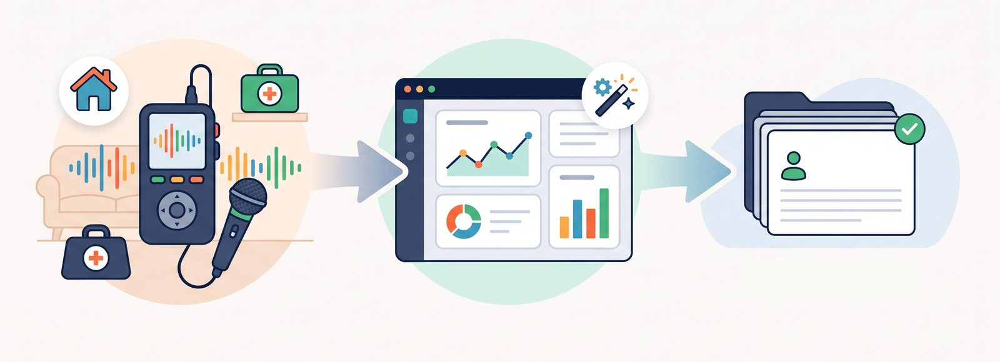

診察の音声を残し、データで振り返る
在宅医療の診察は、病院の外来と違って患者さんのご自宅や施設で行われます。医師が1人で訪問するケースも多く、診察内容の記録は医師の記憶とメモに頼る部分が大きくなりがちです。
「あのとき患者さんに何を伝えたか」「前回と今回で状態がどう変わったか」。こうした情報を体系的に残して振り返る仕組みがありませんでした。月間数百件の診察が行われるなかで、記録の散逸は品質管理の課題でもありました。
「診察の音声をテキストに残して、あとからデータとして振り返れたら」— そんな発想から生まれたシステムです。

「記録は"あとで書こう"と思うと書けない。診察しながら自動で残る仕組みが、いちばん確実」
おひさま会が自院で内製し、運用している実例をもとに、考え方や進め方をお伝えします。まずは手順書を読むだけでも構いません。